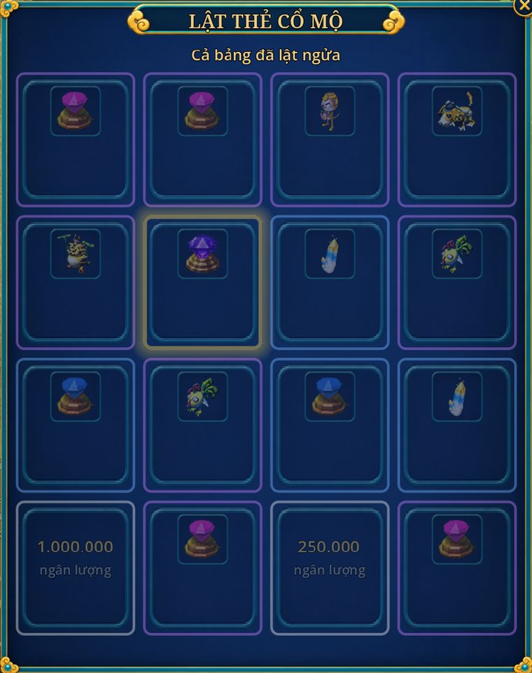

Phó bản Cổ Mộ
- 1 đến 5 người
- Cổ Mộ Xa Phu, Chu Quốc (276, 163)
- 1 lượt thưởng mỗi ngày
- Bản 6.0: Thiên Mệnh, biến cố

Đội trưởng nói với Xa Phu, chọn Vào Cổ Mộ rồi chọn độ khó. Cả đội đứng gần NPC, cấp lệch không quá 10, mỗi người tự trả phí. Đi một mình cũng được.
| Độ khó | Từ cấp | Phí vào | Thời gian | Quân Công | Phiếu (khoá) | Lật thẻ |
|---|---|---|---|---|---|---|
| Thường | 20 | 300.000 | 45 phút | 100 | 1 | 1 nhịp |
| Khó | 30 | 600.000 | 60 phút | 200 | 1 | 2 nhịp |
| Địa Ngục | 40 | 900.000 | 75 phút | 300 | 2 | 3 nhịp |
Bản 6.0 Phí vào 300.000 / 600.000 / 900.000 (bản 5.3: 200.000 / 500.000 / 700.000), bảng thẻ làm lại (dưới). Hạ Lữ Bố được điểm Quân Công thay điểm Cổ Mộ. Mỗi lượt có Thiên Mệnh và biến cố riêng, xem Biến cố trong mộ.
Trong mộ
- 3 đợt Thạch Dũng, rồi Thủ Mộ Thạch Tướng, cuối cùng là Lữ Bố. Ở Khó và Địa Ngục, Lữ Bố hết máu lần đầu sẽ hiện lại ở dạng thứ hai, mạnh hơn.
- Lữ Bố đánh người gây nhiều sát thương nhất, lướt tới người đứng xa, đánh lâu quá thì nổi giận.
- Thấy vòng đỏ dưới chân thì chạy ra ngay. Kéo Lữ Bố xa quá 15 ô thì hắn về chỗ, hồi đầy máu. Bản 5.3 Lữ Bố chỉ nhắm người trong vùng 15 ô quanh chỗ đánh, không còn lướt đánh người vừa hồi sinh ở cửa mộ.
- Chết: hồi sinh ở cửa mộ sau 10 giây, không mất gì. Trang bị bị khoá, thuốc vẫn dùng được. Pháp bảo Chiêu Hồn kéo dậy được một lần mỗi lượt. Bản 5.3 Chết trong Cổ Mộ, Phong Yêu Kính, Thành Kiều và truy bắt không mất kinh nghiệm, không mất Ngân Lượng, trang bị chỉ mòn 5 % độ bền (bản 5.2: mất kinh nghiệm như chết ngoài bản đồ, đồ mòn 10 %).
- Bản 5.2 Khó và Địa Ngục, trong mộ: thuốc máu (cả phần Khí Huyết của Tái Tạo Hoàn) chỉ còn 75 % tác dụng, Địa Ngục 50 %: viên hồi 1.000 máu còn 750, 500. Hút máu (dòng Hấp Thụ Khí Huyết, nội tại Huyết Chiến của Cấm Vệ) giảm như vậy. Đồ ăn và chiêu hồi máu của phái không bị giảm. Trước 5.2: mỗi viên hồi tối đa 25 % Khí Huyết tối đa (Địa Ngục 20 %).
Biến cố trong mộ Bản 6.0
- Mỗi lượt chắc chắn một biến cố (Địa Ngục hai), xảy ra sau đợt Thạch Dũng thứ hai, trước khi đánh Lữ Bố. Không trùng biến cố lượt trước của cùng đội trưởng. Biến cố đếm đòn trúng, không đếm sát thương, nên phái nào cũng góp được.
- Thiên Mệnh của Cổ Mộ có tên riêng: Thạch Dũng Tự Bạo, Lữ Bố Cuồng Nộ (Phá Quân Thế ở 50 % máu thay vì 35 %), Thiết Kỵ Sớm (gọi Thiết Kỵ ở 70 % máu thay vì 50 %, rồi gọi thêm một lần ở 50 %), Âm Khí. Bảng chung ở Thiên Mệnh.
| Biến cố | Diễn biến | Kết quả |
|---|---|---|
| Xích Thố Hồn Mã | Hồn ngựa Xích Thố phi vòng quanh sảnh 40 giây. Cần 30 đòn trúng (mỗi người tối đa 10), mỗi đòn làm nó chậm thêm 3 %. | Thành: Lữ Bố trận này không lướt tới được. Bại: Lữ Bố lướt nhanh hơn, hồi lướt 5 giây (thường 8). |
| Phương Thiên Họa Kích | Bệ đá cắm Họa Kích. Một người đứng cạnh niệm 6 giây để rút, trúng đòn là đứt; Thạch Dũng ùa ra từ hai hướng mỗi 15 giây. | Thành: Lữ Bố mất chiêu Thiên Quân Phá Trận. Đứt 3 lần: Lữ Bố tỉnh sớm, tự tới tìm đội. |
| Điêu Thuyền Hiến Kế | Hồn Điêu Thuyền hiện, đội trưởng chọn một kế trong 15 giây (quá giờ thì bốc). | Liên Hoàn Kế: Lữ Bố còn 80 % máu nhưng nổi giận sớm hơn. Mỹ Nhân Kế: cả đội hút máu thêm 3 %, Lữ Bố đánh mạnh hơn 10 %. |
| Âm Binh Mượn Đường | 8 âm binh phát sáng đi ngang sảnh 30 giây. | Không ai đánh: cả đội nhận Âm Phù, sát thương nhận giảm 15 % tới hết lượt. Có người đánh: cả đoàn hoá tinh anh (máu gấp 3) lao vào đội; hạ hết trong 40 giây thì mỗi người 1 Thú Hồn (khoá) và 20.000 lượng. |
| Mộ Tặc Cầu Cứu | Tên trộm mộ bị 6 Thạch Dũng vây, giữ nó sống 30 giây. | Cứu xong: 70 % nó mở Mật Đạo (bỏ qua đợt Thạch Dũng kế, lộ một Rương Mộ); 30 % nó trở mặt bỏ chạy: hạ trong 25 giây thì người có mặt +1 lượt lật và 30.000 lượng. |
| Mộ Đạo Sụp Đổ | Mộ rung 25 giây, đá rơi trúng chỗ từng người (báo trước 1 giây, trúng mất 6 % Khí Huyết): phải di chuyển liên tục. | Xong lộ Mật Thất có Rương Mộ. |
- Rương Mộ: phá trong 30 giây (cần 10 đòn trúng, thêm 4 đòn mỗi người trong đội). Ai đánh trúng mà rương vỡ kịp thì +1 lượt lật.
- Đổng Trác oán hồn (gặp hiếm, khoảng 10 % số lượt): hiện thay Thủ Mộ Thạch Tướng, máu gấp rưỡi, phun lửa và lao tới làm choáng. Gặp là cả server được báo; hạ được thì mỗi người có mặt +1 lượt lật.
- Hổ Lao Quan (chỉ Địa Ngục): Lữ Bố dạng hai dưới 30 % máu gầm "Thiên hạ vô song", dựng Vô Song Khí không nhận sát thương. Quanh sân hiện Ấn Hổ Lao (3 ấn, ít người hơn thì bằng số người). Đứng đủ mọi ấn cùng lúc 5 giây thì vỡ khí: Lữ Bố choáng 6 giây, nhận thêm 50 % sát thương. 25 giây sau khí dựng lại, ấn đổi chỗ. Cùng lúc một vòng lửa thu dần từ 15 về 6 ô trong 90 giây, đứng ngoài mất 5 % Khí Huyết mỗi giây. Bù lại Lữ Bố Địa Ngục bớt 15 % máu.
- Viện binh Triệu Vân (chỉ Thường, chỉ khi đi một mình): ở bảng chọn độ khó chọn mời Triệu Vân, phí vào thêm 50 % (450.000). Triệu Vân mạnh bằng 35 % Khí Huyết và sát thương của người mời, đi theo đánh mục tiêu của ngươi, trùm cũng nhắm được vào hắn. Chiêu Thất Tiến Thất Xuất (lao xuyên 4 ô, đẩy lùi, hồi 12 giây) và Hộ Chủ Trường Bản (ngươi dưới 25 % máu: lao tới che, khiên bằng 20 % Khí Huyết của ngươi trong 4 giây, hồi 60 giây). Ngã thì 20 giây sau đứng dậy cạnh ngươi. Không lật thẻ, không chia quà.
Lật thẻ
- Lữ Bố chết: mỗi người nhận điểm Quân Công và Vô Song Điểm Phiếu (khoá), rồi lật thẻ theo nhịp. Thường 1 nhịp, Khó 2, Địa Ngục 3. Từ bản 5.2 còn được 1 Âm Dương Gia Lệnh (không khoá) nếu hôm nay còn lượt thưởng.
- Mỗi nhịp chia một bảng 16 thẻ mới, chung cả đội. Mỗi người lật 1 thẻ trong 15 giây, ai chưa lật thì được lật hộ. Lật xong cả bảng ngửa ra 3 giây rồi sang nhịp sau.
- Không còn lật trả tiền. Mỗi bảng có 1 thẻ độc đắc, lật trúng thì cả server được báo. Hành trang đầy thì quà vào túi chờ, có chỗ là tự nhận. Rời mộ giữa chừng thì mất các nhịp còn lại.
- Đồ lật được bán, vứt, giao dịch được.
Mỗi ô ghi lượng mỗi thẻ (nếu hơn 1), số thẻ trên 16 và cơ hội lật trúng ít nhất một lần trong cả lượt (mỗi nhịp một bảng mới).
| Thẻ | Thường (1 nhịp) | Khó (2 nhịp) | Địa Ngục (3 nhịp) |
|---|---|---|---|
| Sơ Cấp Đoạn Thạch | 2 viên · 2/16 · 12 % | ||
| Trung Cấp Đoạn Thạch | 3 viên · 1/16 · 6 % | 4/16 · 44 % | |
| Tinh Thạch cấp 1 | 3 viên · 1/16 · 6 % | ||
| Ngân lượng (thay Thăng Phẩm Thạch) | 270.000 · 3/16 · 19 % | 450.000 · 1/16 · 12 % | 900.000 · 1/16 · 18 % |
| Thẻ Thần Thú (ngẫu nhiên) | 2/16 · 12 % | 2 thẻ · 2/16 · 23 % | 3 thẻ · 1/16 · 18 % |
| Pháp bảo 0 sao (ngẫu nhiên) | 2/16 · 12 % | 2/16 · 23 % | 3 món · 1/16 · 18 % |
| Túi ngân lượng | 300.000 · 2/16 · 12 % | 1.800.000 · 3/16 · 34 % | 1.800.000 · 1/16 · 18 % |
| Vô Song Điểm Phiếu | 2 phiếu · 1/16 · 6 % | 3 phiếu · 1/16 · 12 % | 4 phiếu · 1/16 · 18 % |
| Thẻ Thú Cưỡi Thường | 2 thẻ · 1/16 · 6 % | ||
| Cao Cấp Đoạn Thạch | 3 viên · 1/16 · 12 % | 2 viên · 2/16 · 33 % | |
| Thẻ Thú Cưỡi Hiếm | 3 thẻ · 1/16 · 12 % | ||
| Bùa Ma Thuật | 3/16 · 46 % | ||
| Bùa May Mắn | 3/16 · 46 % | ||
| Tinh Thạch cấp 3 | 2 viên · 1/16 · 18 % | ||
| Thẻ Thú Cưỡi Quý | 1/16 · 18 % | ||
| Độc đắc (1 thẻ) | 2 Cao Cấp Đoạn Thạch · 6 % | 3 Thẻ Thần Thú chọn con · 12 % | Đỉnh Cấp Đoạn Thạch · 18 % |
Bản 6.0 Bảng trên là bảng mới của bản 6.0. Lượt lật thêm (Khiêu Chiến, biến cố Mộ Tặc và Mộ Đạo Sụp Đổ, hạ Đổng Trác) lật ở một bảng phụ sau nhịp cuối, không rút bảng chính: 4 thẻ Sơ Cấp Đoạn Thạch, 4 thẻ 3 Thú Hồn, 4 thẻ 160.000 lượng, 3 thẻ 80.000 lượng, độc đắc 3 Sơ Cấp Đoạn Thạch.
Bùa Ma Thuật, thú cưỡi Quý, Đỉnh Cấp Đoạn Thạch và Tinh Thạch cấp 3 chỉ Địa Ngục mới ra. Lượt thưởng tính lúc Lữ Bố chết: thua hoặc hết giờ thì chưa mất lượt, vào lại được trong ngày; tự rời giữa chừng thì mất lượt hôm nay (bản 6.0, xem luật ngày). Từ bản 6.0 điểm Cổ Mộ thành Quân Công, đổi ở Quân Công Phủ.
Bản 5.0 Thẻ Thăng Phẩm Thạch thành thẻ ngân lượng (90.000 lượng mỗi viên); Tiệm Cổ Mộ bỏ Thăng Phẩm, Tái Tạo Thạch. Mỗi lượt có 2 Bảo Rương Tinh Xảo, mở bằng Chìa Khoá Vàng.
Bản 5.1 Tiệm Cổ Mộ đắt hơn (trước: Thẻ Thần Thú chọn con 300, pháp bảo 100, Sơ Cấp 100, Tinh Thạch 25, Thú Hồn 10). Thường: thẻ Sơ Cấp 2 viên (trước 4). Địa Ngục: 2 thẻ Cao Cấp mỗi thẻ 2 viên (trước 4 thẻ 1 viên), Bùa May Mắn 3 thẻ (trước 1).